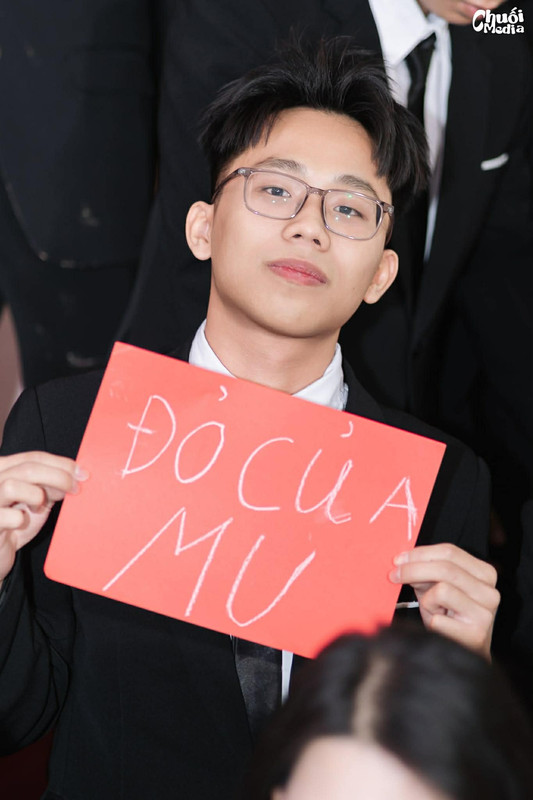

Ngày sinh: 25/01/2008
Quê quán: Phường Phố Hiến - Hưng Yên
Sở thích: Lập trình,Nghe nhạc,Đọc sách,Chơi game, nói chuyện cùng Trần Thành Công
Ba năm học cùng nhau là khoảng thời gian mình sẽ không bao giờ quên. Cảm ơn cô chủ nhiệm đã luôn kiên nhẫn và tận tâm với cả lớp. Cảm ơn các bạn đã cùng mình vượt qua biết bao buổi học, bài kiểm tra, và những buổi chiều tan trường rôm rã. Dù mai này mỗi người một ngả, nhưng 12D mãi mãi là nhà! 💛